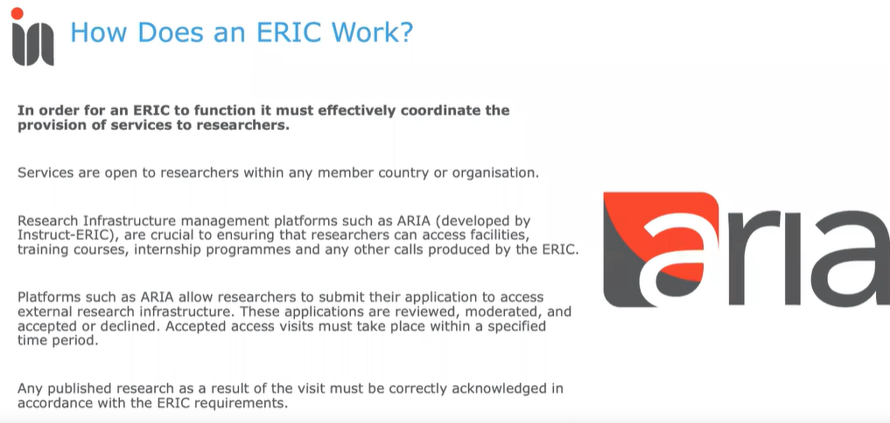
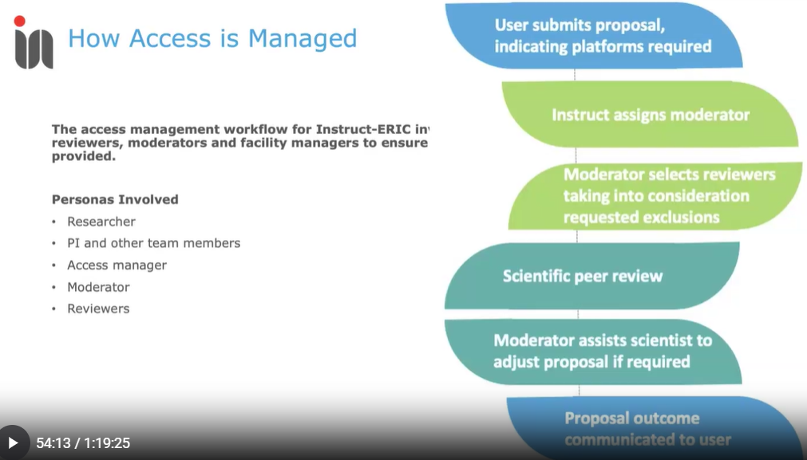
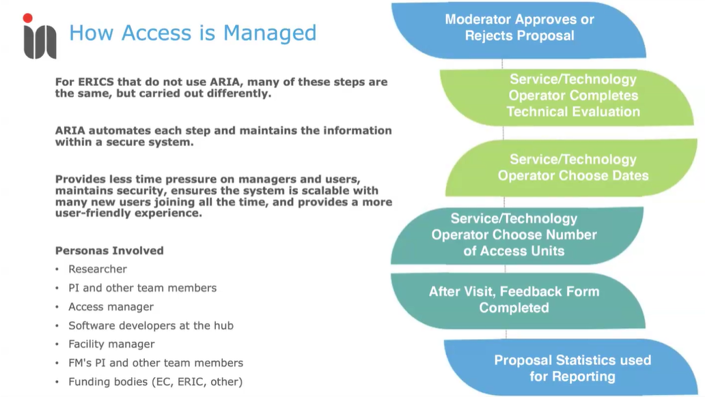
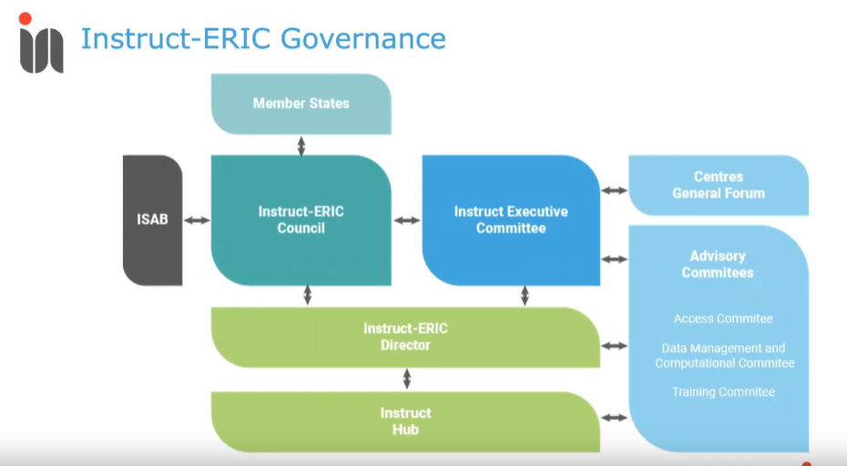

4. Pan-European coordination of infrastructures in Europe
At the European level, cutting-edge research infrastructures (RIs)—such as core facilities, technology platforms, and specialised data services—are often organised within international frameworks designed to enable access for researchers from across Europe and beyond. Because these infrastructures are costly to build and operate and require specialised expertise, European countries frequently collaborate to develop and manage them jointly.
European research Infrastructure are large consortia of smaller research infrastructures in multiple European countries. They are not scientific institutions as the large infrastructures from the previous section, but are operating as consortia. Most of them are distributed across Europe.
Establishment of these consortia was kick-started in 2006 by the European Strategy Forum on Research Infrastructures (ESFRI; esfri.eu ), a platform for strategic planning and collaboration on research infrastructures in Europe and beyond. ESFRI is not a part of the EC, but an independent organisation set up by the representatives of EU countries.
ESFRI was created at the beginning of this century, more than 20 years ago, when European governments met to solve the problem above. It has a representative from each European country. Countries have very unequal infrastructure in different areas, and the governments concluded that the only way forward was to share what exists and to build the mechanisms that make sharing possible.
Sharing everything would be too complicated, so ESFRI writes a roadmap that picks the areas where sharing is the only practical option: areas so expensive, complicated, difficult to manage or expertise-intensive that they can only be provided by sharing, and areas of strategic importance such as health or food security.
The first roadmap was written in 2006 and already included six biomedical infrastructures; structural biology was among them. A new roadmap is published every two to four years. Areas that mature become landmark infrastructures. Instruct and ELIXIR were on the 2006 roadmap and are now landmarks.
These consortia are often legally established using the legal form called ERIC (European Research Infrastructure Consortia (ERIC) or similar forms. Colloquially, the community refers to all such European REsearch infrastructures consortia as ERICs, or as ESFRI infrastructure.
The ERICs mission is to provide researchers with access to infrastructures across Europe, support the development of those infrastructures, raise awareness of their services, and advance knowledge within the research community regarding the technologies that infrastructures offer. ERICs further contribute to the research landscape by strengthening national and international collaboration and facilitating the more rapid exchange of expertise. Services that researchers access through ERICs also come with a seal of quality - telling users that data and services can be trusted. Standards and quality control get evaluated before the facilities/services can join the ERICs. Easier access to diverse services ensures broader training of the researchers from across Europe. This spread of knowledge is one of the most important impacts of all types of infrastructure.
Creating consortia of the different and even distributed infrastructures allows various disciplines and fields to cooperate better through their ERICs and within them - the life science infrastructures share improvements to their services, help users navigate between them and send colleagues from one infrastructure to another.
4.1 How are ESFRI Infrastructures (aka ERICs) created
Based on a dedicated survey, ESFRI identified six biomedical fields of high strategic relevance, which were included in the so-called European Roadmap. Research infrastructure communities working in these fields then organised themselves and applied to the EC with their projects to develop European Research Infrastructure in their technology or science field, with an aim to gradually secure membership from countries and organisations.
Each Infrastructure has gone through — and newly established ones continue to go through — two distinct phases:
- Project phase: A period funded by the European Commission during which the concept of the specific ERIC is still being developed, the community organises and prepares the ground for the formal establishment of the ESFRI Infrastructure as the legal entity.
- Landmark status: Consortia that have been officially designated as legal entities, with membership from countries and organisations confirmed, and the legal framework fully established, ensuring long-term sustainability. The most common form of the legal entity of European Research Infrastructures is ERIC - the acronym for European Research Infrastructure Consortium. This is a legal form established by the EC specifically for European Research Infrastructures, to give a legal personality to a consortium of research infrastructures providing a shared type of service and operating across multiple European countries (analogous to Ltd. in UK or GmbH in Germany for companies). For the simplicity of the text, and because this lecture does not address legal details of the formation of the European Research infrastructures, we will use the term “ERIC” intermittently with the term “ESFRI Infrastructure” for all European Research Infrastructures established by ESFRI.
Why the ERIC legal form was needed: while large, centralized, infrastructures already had a legal form (the organisation hosting them), getting together many smaller infrastructures distributed across Europe was lacking a legal form which could bring them together in a legally valid way. Without a legal form they could not operate freely across Europe, apply for grants as one entity, and raise awareness of their existence and needs. Being an ERIC lets an infrastructure provide access, training and outreach and apply for European funding.
Not every ESFRI infrastructure is an ERIC , few of them have an alternative legal entity due to organisational reasons, although they share the same mission as ERICs do and operate in the same filed.
At the same time, not every ERIC was on the ESFRI roadmap, but most infrastructures on the roadmap are now ERICs. About 37 ERICs exist across all domains, including humanities, social sciences and material sciences.
In order to become an ERIC (with a Landmark status on the ESFRI roadmap) at least 3 countries need to agree on the strategic importance of the RI community and become its founding members, which are then funding the operation of the ERIC. Every ESFRI Infrastructure has a different number of memberships; some may only have a handful of members while others are made up of about 17 or more. Not only countries can be members, but also international organizations. EMBL is an example of this, being a member of different ESFRI Infrastructures (Instruct-ERIC, EuroBioImaging and ELIXIR) ERICs. An ERIC must also show that it ensures mobility of knowledge and researchers and transparency of research results, and it must support the democratisation of resources and reduce duplication.
Core facilities and other local research infrastructures can join the European Research Infrastructure activities once their country (or international organisation) joins the ERIC . There they can join the user program ERICs run, providing broader access to users to their facilities in a coordinated way.
What member fees pay for: travel and accommodation of researchers, consumables at facilities so that access can be free, training courses, internships, networking, conferences and the access manager. Each ERIC decides how to spend the fees, and each must publish an annual report that shows what it did with the money of each member.
4.2 Which ESFRI infrastructures are there?
The ESFRI website provides an up-to-date list of all projects and landmarks: https://ri-portfolio.esfri.eu/ri-portfolio/portfolio-editions/2024-first-edition/table/ .
Today, there are 30 ESFRI Infrastructures (landmarks and projects) working in a wide range of six scientific domains :
- digital sciences,
- energy,
- environmental sciences,
- health and food (incl biomedical fields),
- physical sciences and engineering,
- social science and humanities.
Life Science ESFRI Infrastructures
In the domain of health and food sciences, in 2025 there are 12 established infrastructures, and all of them are distributed - a group of facilities and other infrastructures providing services across Europe. These ESFRI Infrastructures are presented on a shared portal: lifescience-ri.eu
| Name | Full Name | Type |
|---|---|---|
| AnaEE-ERIC | Analysis and Experimentation on Ecosystems - European Research Infrastructure Consortium | DISTRIBUTED |
| MIRRI-ERIC | Microbial Resource Research Infrastructure - European Research Infrastructure Consortium | DISTRIBUTED |
| BBMRI-ERIC | Biobanking and BioMolecular Resources Research Infrastructure | DISTRIBUTED |
| EATRIS ERIC | European Infrastructure for Translational Medicine | DISTRIBUTED |
| ECRIN ERIC | European Clinical Research Infrastructure Network | DISTRIBUTED |
| ELIXIR | A distributed infrastructure for life-science data | DISTRIBUTED |
| INFRAFRONTIER | European Research Infrastructure for Modelling Human Diseases | DISTRIBUTED |
| ERINHA | European Research Infrastructure on Highly Pathogenic Agents | DISTRIBUTED |
| EU-OPENSCREEN ERIC | European Infrastructure of Open Screening Platforms for Chemical Biology | DISTRIBUTED |
| Euro-BioImaging ERIC | European Research Infrastructure for Imaging Technologies in Biological and Biomedical Sciences | DISTRIBUTED |
| EMBRC ERIC | European Marine Biological Resource Centre | DISTRIBUTED |
| Instruct-ERIC | Integrated Structural Biology Infrastructure | DISTRIBUTED |
Four communities are for the moment at the Project level:
| Name | Full Name | Type |
|---|---|---|
| EMPHASIS | European Infrastructure for Multi-scale Plant Phenomics and Simulation | DISTRIBUTED |
| IBISBA | Industrial Biotechnology Innovator and Synthetic Biology Accelerator | DISTRIBUTED |
| METROFOOD-RI | Infrastructure for Promoting Metrology in Food and Nutrition | DISTRIBUTED |
| EIRENE RI | Research Infrastructure for EnvIRonmental Exposure assessmeNt in Europe | DISTRIBUTED |
4.3 How does an ESFRI Infrastructure work?
A key role of an ESFRI Infrastructure is to foster the
- access to knowledge, technology and innovation
- transparency of research results,
- mobility of researchers.
Each ERIC’s activity is managed from a dedicated central coordination office - or Hub, but access, training and other support is provided by the members of the ERICs - Nodes/Centres. Nodes(Centres) are usually countries, but can also be organisations.
The services are open to researchers working in any of the organisations or member countries. Some infrastructure services can also be open to “anyone” - e.g. in the case of FAIR tools via ELIXIR.
Funding model: choosing how access is financed is one of the key decisions when setting up an infrastructure. Some infrastructures gives free access to users from member countries and does the work to raise the funding for it (e.g. Instruct-ERIC). This spares users of the bureaucracy and supports democratisation, but facilities also need support from their home country as an in-kind contribution. Even if the member states’ users get the free access, non-member states do pay the facility which they are using.
Many other ERICs charge for access, but help their users find the ways to fund the funding.
4.4 User Access program
Core operational tasks of ESFRI Infrastructures are to enable researchers to learn about available services at facilities and platforms that are part of an ERIC, and request to use them. Often, access to a service is dependent on an independent evaluation of the proposed project that the user wishes to perform through the relevant ERIC. Thus, ERICs provide information on their available services and a platform to submit an application to use the service. The applications are reviewed, moderated and accepted or declined. If access includes e.g. site visits, these must usually take place within a specific time period. Published research results that emerge from the visit, e.g. the ERIC’s infrastructure, must be correctly acknowledged in agreement with the ERIC requirements. In other cases where services are freely available, these can be used as necessary by the users.
Structured management of access to the facilities is called a User access program, and ERICs are setting standards for such programs, which can serve as examples to other organisations who wish to centrally organize access to their infrastructures.
Creating a catalogue of services is harder than it looks: it needs enough detail for scientists to know what they are accessing but not so much that they get lost in thousands of entries. The description must provide clear and comparable way, which is a challenge when handling different technologies (e.g. (NMR, cryo-EM, synchrotron). The proper description of the technologies and services is allowing for users to chose the correct technology/service easily, and to avoid random selection of offered technologies.
This structured system of management of access of users to the facility (User access program) includes following elements:
- Defining who can use the facility and under what conditions
- How do they apply to get access (e.g. Online request portal, Scientific or technical review, Scheduling system (first-come, priority-based, peer-reviewed, etc.)
- Costing and billing (defining if the users are charged, for what, what is covered by the unit funded by the ERIC, etc)
- How the users are onboarded (who is responsible for their initial training, safety)
- What is happening with generated data and publications
- How is the quality of the service assured (evaluations, surveys of the users, tracking of metrics)
Academic organisations with multiple infrastructures, which provide access to internal and external users increasingly establish structured user access programs to internally coordinate and manage their facilities and user services. This ensures that applications by the future users are reviewed, scheduled, and supported in a transparent, fair, and efficient way. It also helps track quality, safety, and proper acknowledgement of resources.
ESFRI infrastructures often also provide access to training, networking or internships, and for these similar Programs with organisational procedures need to be set up. There are different ways that ERICs use to implement and manage such programs, and they increasingly involve use of the access/user management software.
ESFRI infrastructures also work together on the topics of Data management, and collaborate with EOSC- European Open Science Cloud. EOSC sets the protocols for cloud services across Europe rather than being the cloud itself. ERICs, used to collaborating and providing FAIR data, have contributed more than their size suggests; some, including Instruct-ERIC, are members of the EOSC Association, though not all are. It is still not fully clear what EOSC will become, so ERICs follow and contribute to the discussions.
Example 1: Access management using the software ARIA

To run a user access program, one needs an access management team (for ERICs a team at ERIC Hub does this role), reviewers, moderators and facility managers to ensure that the research proposals are valid and access to the infrastructure can be provided.
People involved in the inquiry process on the user’s side are the researcher, their principal investigator (if the researcher applying is not the PI) and other group members.
In addition, one needs a good access management platform to collect, evaluate and manage applications, communications and reporting.
The research infrastructure management platform ARIA (https://aria.services/), developed by Instruct-ERIC, is supporting researchers to request access to a facility (user programs), training courses and internship programmes. In User programs, ARIA allows researchers to submit their application for accessing research infrastructures and provides a platform for reviewers to evaluate applications, ie. accept or reject.
ARIA facilitates the process of submitting the proposals, accessing facilities, attending training courses or doing internships. It automates each step, providing a more user-friendly experience while maintaining the information within a secure and scalable system. Throughout the process every entity involved can only view the information in the software they are supposed to see. The tools available when Instruct started could not handle the whole process, so Instruct built ARIA with Commission funding between 2008 and 2011. It covers catalogue building, the application process, feedback and the statistics needed for reporting. It was so successful that other infrastructures now use it for their own access.
When Instruct-ERIC runs user programs for physical access to infrastructure, the Application Process using the ARIA usually involves following steps:
- The user submits a proposal indicating which technologies are requested at what facility.
- ERIC (or an organisation) that is running a user program assigns a moderator that looks after the proposal.
- The moderator selects reviewers - some are external and some are internal.
- The proposal is scientifically peer reviewed and either approved or rejected.
- If required, the moderator assists the scientist to adjust the proposal.
- The moderator finally approves or rejects the proposal. The result of the review is communicated to the user with the evaluation of the reviewers in an anonymous way, i.e. the user is informed about what the reviewers said but not who was the reviewer.
- The Service/Technology provider completes the technical evaluation.
- The Service/Technology provider chooses dates for the visit at the facility.
- The Service / Technology provider chooses the number of access units1.
- After the visit a user fills in a feedback form.
- Statistics on the number of requests to use the facility ( proposals) is relevant for reporting and strategic analysis of the needs.
Evaluating the proposals: For each proposal, the moderator assigns three reviewers. Besides the scientific grade there is the technical evaluation; a proposal may be good but not possible in one facility and possible in another. Visit arrangements (date, travel, accommodation or sample shipping) are organised with help from the Instruct-ERIC hub. After the visit is over and feedback provided to the Instruct,, the facility and the user are paid for costs incurred - sometimes the user pays and is reimbursed, sometimes the facility is paid directly by the Instruct
Due to budgetary restrictions, not all eligible proposal can be funded, so the ones to be funded are selected based on their ranking order. The proposals that do not quality to receive the funding can still access the facility and pay for the service from their own funds.
Instruct first considered letting only PIs (principal investigators) apply. It dropped the idea because the meaning of PI differs across Europe, and because in some countries applying for access is a researcher’s first experience of writing a proposal. The compromise is that anyone may apply, but the PI must be on the team, so the PI knows a team member plans to go abroad.
Example 2: Operation of Instruct-ERIC
The name Instruct stands for integrated structural biology: the aim is to solve a structural problem with whichever technique is best, from sample production to data analysis. The hub is located in Oxford. More information can be found here: instruct-eric.org/
1. Services Catalogue
Instruct-ERIC provides access to more than 95 services. Each new service which is considered to be added to the catalogue is analysed by the Access Committee, which checks whether it is unique or in high enough demand to be added. Some services are offered by more than one facility, which gives redundancy when a facility is full.
This service catalogue encourages a multidisciplinary approach to structural biology research.
The services include
- sample preparation (crystallisation, nanobody discovery and protein production),
- biomolecular analysis (imaging, mass spectrometry and molecular biophysics)
- 3D Structural Analysis (electron microscopy, magnetic resonance and X-ray techniques).
Every facility is specialized in one or more services, which can be found on the Instruct homepage. Not all facilities of one country become part of Instruct-ERIC, only selected ones, and within them only selected technologies can be offered through Instruct. ERIC signs a service level agreement in what is going to be offered through Instruct (e.g. only structural biology and chemistry department at the University of Oxford). As soon as becoming a member of Instruct all researchers can make use of the infrastructure mainly for free. This allows transnational use.
In addition, Instruct is offering training in technology usage, since most of the infrastructure requires highly specialized user abilities.
2. Overview and Self-Concept: Instruct-ERIC has a pan-european and non-profit driven mandate, and brings together distributed facilities, aiming to keep a geographical balance. The core value is the provision of high end knowledge and centres (or nodes) are reviewed periodically (every 5 years). Centres are evaluated by an independent advisory board and by usage statistics, which show which centres are popular. Only evaluated centres of excellence may provide access, and each facility signs a service level agreement. Some member countries have no centre yet because their facilities have not been evaluated; Italy has one centre with one facility, while Germany, Spain, France, the UK and the Netherlands have several.
Instruct-ERIC’s mission is also to promote innovation. Regarding users, it is their choice which facility they choose to apply to, not only what technology they need to use.
3. Access Process and Proposal Handling: Access to Instruct has been provided since 2011. In contrast to many other ERICs, access through Instruct-ERIC is funded to a predefined limit (€) for all researchers from the member countries or organisations. The financial support that Instruct provides goes to facilities, and covers the services for research at the facilities as well as a contribution towards user travel to that facility. Travel costs are not needed when the services can be accessed remotely (by sending the samples or accessing instrumentation virtually). The dedicated access budget fosters the idea of research on the basis of the professional knowledge and not the financial status. Thus, Instruct helps countries where funding would be a limiting factor.
Researchers apply to use Instruct services by submitting the research proposal through ARIA. The facility to which the researcher applies evaluates the proposal. The approval rate is ca. 60 - 90 %. Facilities can always reject a proposal due to technical reasons, e.g. a lack of capacity in terms of utilization rate or technical capacity meaning that a proposal may be scientifically great but not technically feasible.
The whole submission process until the final feedback, i.e. acceptance or rejection, takes approximately 5 weeks. Generally, the capacities are allocated according to a first come, first serve basis.
Due to limited funding, it is not possible to accept (and fund) all proposals. However, researchers may still use the infrastructure but have to find their own funding.
The Facility Managers have the responsibility to foster a successful visit of the user at the facility (incl onboarding, safety instructions etc). The visit time at the site may be distributed over a few days, weeks until a couple of years. A major factor influencing this is the method of access, i.e. either in person on-site or remote.
More than 60% of Instruct services are now offered remotely. Because some facilities already offered remote access and others started to, Instruct did not stop offering access for a single day during the two years of the pandemic. Approved funding is locked for that proposal for six months; if the visit has not happened by then, the proposal is cancelled and the money returns to the pot. Six months after a completed visit, the system automatically asks the user whether they have published.


4. Financial Support provided to the facilities and users includes support costs for access (contribution towards consumables and daily instrument costs). This normally funds visits of 2 to 5 days at a facility and User Travel Costs, travel and accommodation during a user visit to the Instruct centre, or sample shipping costs.
5. Development of new INSTRUCT-ERIC centres: Instruct-ERIC actively develops communities in countries and infrastructures who wish to join until they are ready to open new Instruct Centres. The first step towards this is to become a member and to be part of the Horizon Projects while networking together. In a second step it is crucial for members to have a research site that also provides training, and does outreach and networking activities. If the infrastructure and expertise on-site evolves and becomes either unique or fulfills a special need of the research community on a high-end level a new Centre may be opened. A prerequisite for this is a positive evaluation through Instruct ERIC and the centre’s ability to contribute yearly funding to Instruct-ERIC.
6. Other Instruct-ERIC Services in addition to user access support: INSTRUCT-ERIC provides support for internships, R&D funding, Joint research activities, and networking and outreach:
- Internships can be done at Instruct Centres and are funded by Instruct. The research visits may have a duration of 3 to 6 months. Each of the 56 internships done up to 2025 foster collaboration with Instruct research groups, offering the opportunity to gain experience in techniques that are not available at the applicant’s laboratory. Due to gender equality policy 46% of the interns are now women.
- R&D Funding is given to early career researchers to advance their career goals.
- Through Joint research activities (JRA Projects) Instruct is providing funding to facilities to enable them to develop new technologies and improve existing ones.
- Outreach activities are important for making sure the community knows about the calls, job opportunities and events, and that the visibility of the RIs and their impact is strengthened. Instruct-ERIC Hub writes scientific highlights from the facilities and users work, organizes webinar series on YouTube, publishes newsletters and social media, supporting the Instruct centres to inform the community about their work.
- Networking within the Instruct-ERIC is done during the Biennial Conference.
- Support for gender equality in RI - for Instruct events gender distribution is always considered.
7. Governance : Instruct is governed by the Council, where each member has a representative. Centres which are the main operational parts meet in the executive committee and apply strategy from councils for actual activity. The Hub is in charge of the governance and secretariat of all committees.

Example 3: Operation of ELIXIR
Elixir is the ESFRI infrastructure for data related resources in life sciences (data bases, software tools, training materials, cloud storage and supercomputers)
Website: https://elixir-europe.org/.
Elixir is established by 23 members (countries plus EMBL; a country’s organisation is a node) and four observer countries; bringing together more than 250 institutions and more than 850 experts. The hub is located at EMBL-EBI. Work is organised in five platforms, which build the infrastructure and develop cross-domain services, and in communities, which are life science or technical focus groups that link the platforms to end users and may include non-ELIXIR partners. Focus groups are looser groups working on one topic for two years. The communities’ policy and management are written up in a handbook. The five-year scientific programme has four tiers, including a science tier and a technology tier, and also focuses on the nodes and on developing people.
Services (from the course): 686 services at the time, most of them tools, then data resources, interoperability, training and compute services. The hub does not run training or provide compute itself; the nodes do. The hub coordinates and describes them in a common language so that users can find them. ELIXIR also looks at partnerships with industry and small and medium-sized enterprises, which can open the way to European funding. Services are freely available worldwide, though some membership benefits go only to people at ELIXIR institutions.
ELIXIR services are FAIR - findable, accessible, interoperable and reusable. All of the services are supported and maintained by one or several ELIXIR Nodes, which commit to this support via their Service Delivery Plans.
The list of all available services can be found here: https://elixir-europe.org/services/list.
Apart from the service catalogue ELIXIR supports and maintains, there’s a list of Recommended Interoperability Resources (RIR). These are tools and registries that have been selected by a panel of external reviewers and identified as resources that facilitate the FAIR-supporting activities in scientific research, such as:
- Establishing connections between data (and other) resources
- Acquiring and exposing metadata (and other) resources
- Creating the infrastructure needed to build integratable data collections
- Using interoperability resources to support delivery of FAIR principles.
More information can be found here: https://elixir-europe.org/platforms/interoperability/rirs.
Similarly to the RIRs, a set of Core Data Resources (CDRs) exists. These are a set of European data resources of fundamental importance to the wider life-science community and the long-term preservation of biological data.
Their identification involves a careful evaluation of the multiple facets of the data resources. Indicators used in the evaluation are grouped into five categories:
- Scientific focus and quality of science
- Community served by the resource
- Quality of service
- Legal and funding infrastructure, and governance
- Impact and translational stories
More information can be found here: https://elixir-europe.org/platforms/data/core-data-resources
In addition, the ELIXIR Deposition Databases lists recommended places to deposit experimental data. Collections act as a quality certificate because resources pass internal and external review. Examples of registries and services: Life Science Login (authentication), FAIRsharing (data and metadata resources, standards, databases), the TeSS portal (training materials and trainings), BioContainers (software containers and packages, about 108,000 users) and bio.tools (registry of tools, databases and services). Research data management support includes the RDM Kit and the FAIR Cookbook.
People can join an ELIXIR community through the “join this community” button on its page, which adds them to the mailing list.
-
Unit describes how the amount of access at the facility is measured and charged ( in number of days, hours, samples, or projects). ↩